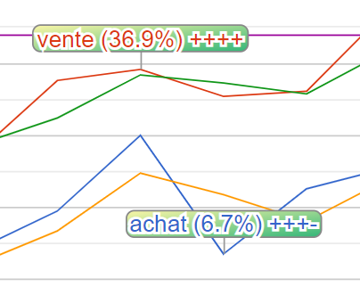

Ici la page pour voir rapidement les actions à prendre.
Ici la page pour regarder les statistiques d'une monnaie en fonction des quatres critères.
Ici la page pour voir en temps votre monnaie, et recevoir les alertes selon les quatres critères.
Ceci est un projet personnel prototypes d'une future application mobile. Donc soyez indulgent.
Si vous avez des
idées d'amélioration ou si vous trouvez des erreurs, il est possible de créer des tickets sur githhub.
Le premier principe est le croissement de la courbe avec une moyenne mobile :
Le croisement n'est pas le seul élément pris en compte. Ainsi nous definissons les quatres critères (les + et - dans
les pages suivantes).
Ces critères sont appliqués sur les valeurs basses et hautes du cours de la monnaie observée. Ainsi pour savoir si
il faut acheter, c'est la moyenne des valeurs basses est analysée, et pour la vente, la moyennes des velaurs hautes.
